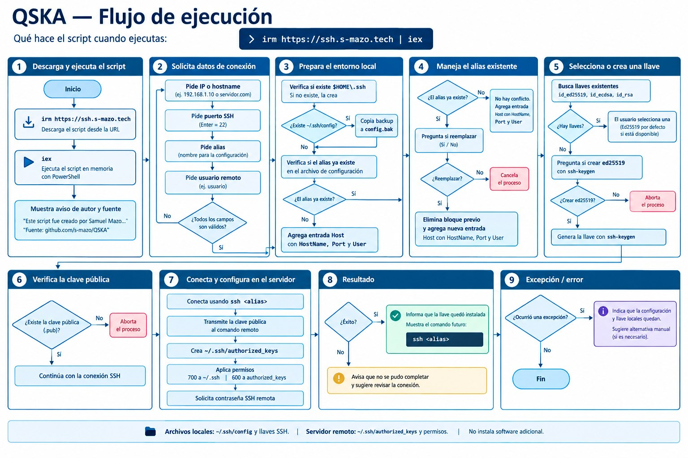

QSKA
Quick SSH Key Assistant: un script de PowerShell que deja tu acceso SSH listo en menos de un minuto, ejecutado con un solo comando directamente desde internet.
Úsalo así:
irm https://ssh.s-mazo.tech/ | iex

Captura real de una ejecución del script (con datos de demo). Sin mockups: esto es lo que verías al correrlo en tu máquina.
QSKA en cifras
Qué hace por ti
Configuración del alias
Agrega el host a tu ~/.ssh/config con HostName, Port y User. Si ya existe un config, crea un backup automático en config.bak antes de tocar nada; si el alias ya existe, te pregunta si quieres reemplazarlo.
Gestión de llaves SSH
Detecta tus llaves existentes (id_ed25519, id_ecdsa, id_rsa) y te deja elegir cuál usar —con ed25519 como opción por defecto— o crea una llave ed25519 nueva con ssh-keygen si no tienes ninguna.
Instalación en el servidor
El equivalente a ssh-copy-id (que no existe en Windows): conecta por SSH, añade tu llave pública a ~/.ssh/authorized_keys del servidor remoto y aplica los permisos correctos (700 a ~/.ssh, 600 a authorized_keys).
Transparencia y seguridad
Solo toca tu carpeta ~/.ssh. No cambia políticas del sistema, no envía datos a ningún servidor ni instala nada fuera del OpenSSH que ya trae Windows. Código abierto para revisarlo línea por línea antes de ejecutarlo.
Validación de entradas
Valida cada dato antes de escribir: IP o hostname obligatorios, puerto entre 1 y 65535 (Enter = 22), alias con solo letras, números, guiones y guiones bajos. Nada de configs rotos por un typo.
Ejecución desde internet
Pensado para correr con irm | iex: se descarga el script, se ejecuta en memoria y listo. También puedes clonar el repositorio y ejecutarlo localmente si prefieres revisarlo primero.
Flujo de ejecución

Los 9 pasos completos del script: descarga y ejecución, solicitud de datos, preparación del entorno local, manejo de alias existentes, selección o creación de llave, verificación de la clave pública, conexión y configuración del servidor, resultado, y manejo de excepciones.
Requisitos
| Requisito | Detalle |
|---|---|
| Sistema operativo | Windows 10/11 (o Windows Server con PowerShell) |
| PowerShell | 5.1 o superior |
| OpenSSH Client | Habilitado en Windows (viene por defecto en Windows 10 1809+) |
En Linux/Mac no es necesario: ahí ya existe ssh-copy-id y editar ~/.ssh/config es trivial. QSKA existe porque en Windows ese proceso es tedioso.
Cómo usarlo
Opción 1 — desde internet (recomendada): abre PowerShell y pega irm https://ssh.s-mazo.tech/ | iex. El script se descarga y ejecuta en memoria; en menos de un minuto tendrás tu alias listo y la llave instalada en el servidor.
Opción 2 — descarga local: clona github.com/S-mazo/QSKA y ejecuta .\quickconnect.ps1. Ideal si prefieres leer el código antes de correrlo (y deberías, siempre).
Al terminar, solo escribes ssh tu-alias y estás dentro: sin contraseñas, sin IPs largas, sin puertos raros.
Mi rol
Diseño y desarrollo completo de QSKA: automatización de conexiones SSH en Windows mediante PowerShell, validación de entradas, gestión de alias y llaves SSH, configuración de autenticación por clave pública y publicación mediante un dominio dedicado (ssh.s-mazo.tech) — desarrollado de forma individual, con ejecución simplificada a un solo comando y código abierto bajo licencia MIT.